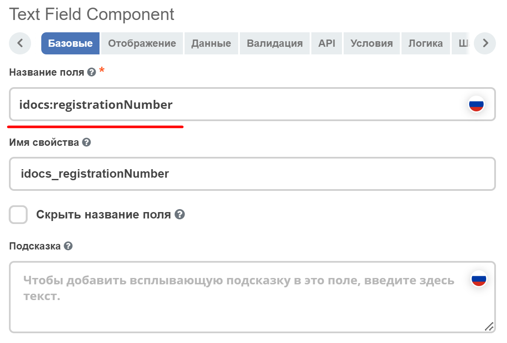
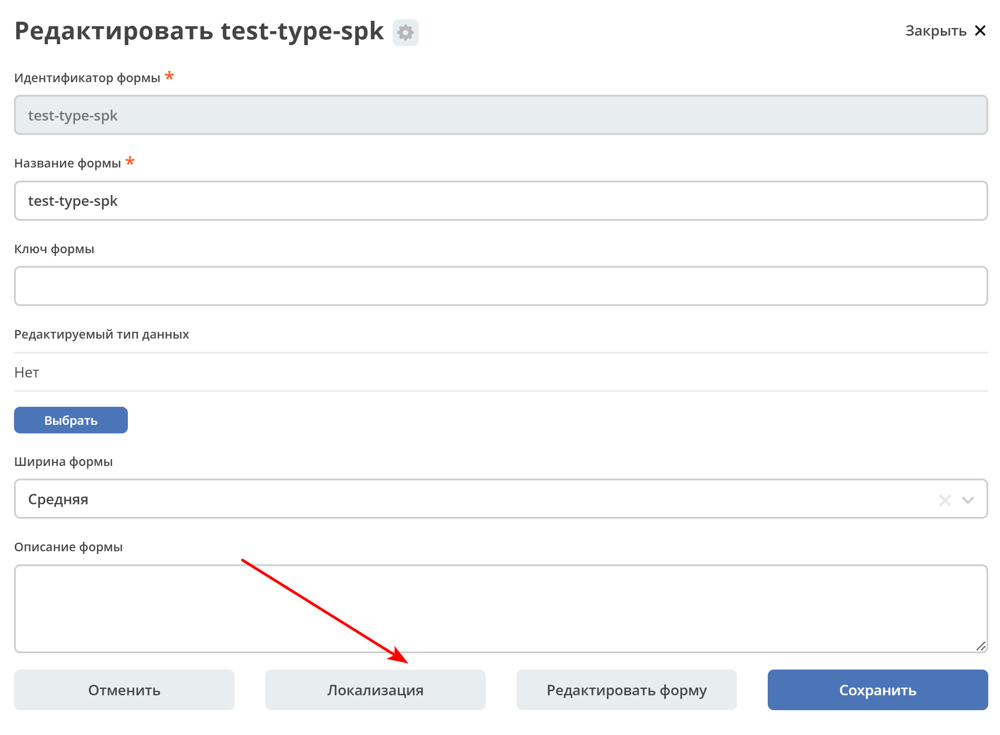
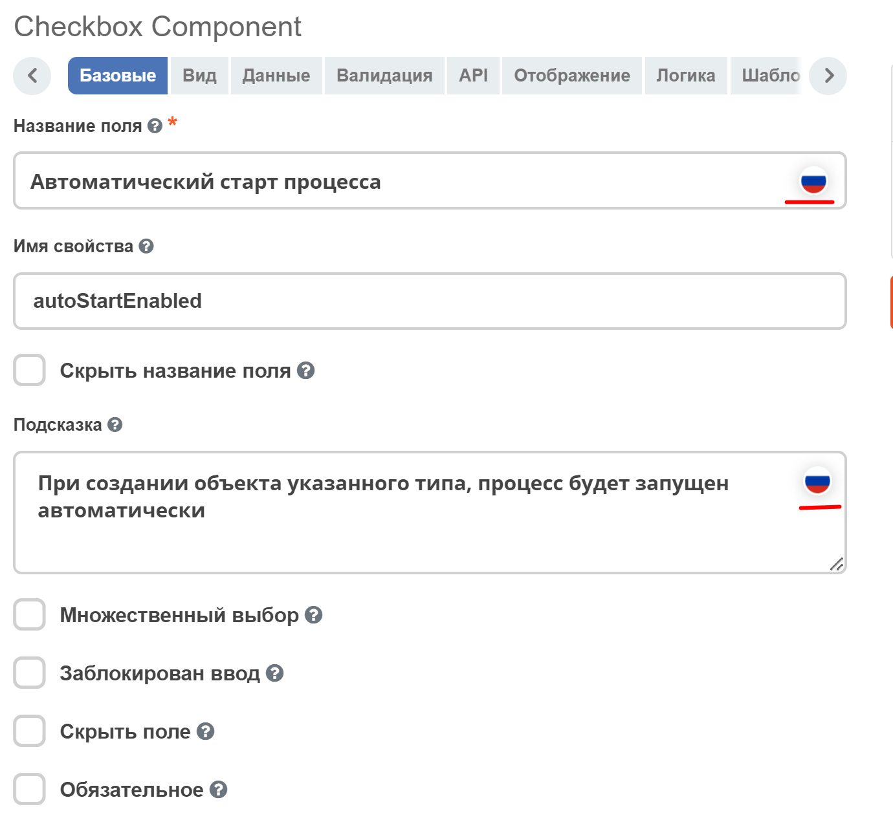

Локализация
Все Label у полей на форме перед рендером проходят через этап локализации. Если ключа локализации не найдено, то рендерится строка, которая записана в поле Label у поля.
1. Глобальная локализация
Вся локализация, которая имеет префикс ecos.forms. попадает в формы. Например ecos.forms.someTitle="123"``попадет в формы в виде: ``{"someTitle":"123"}.
В качестве глобальной локализации используется локализация из site-messages/*.properties файлов *-share модулей.
2. Локализация атрибутов
Если Название поля у поля совпадает с редактируемым атрибутом, то происходит запрос на сервер за заголовком для такого поля. Если заголовок найден, то поле будет локализовано.
{kind=link}
{kind=link}
3. Локализация формы
В json конфигурации формы можно задать локализацию, которая будет действовать только в пределах данной формы. Пример:
{kind=link}
Такой вариант подходит, если требуется добавить пользовательскую локализацию для сообщений об ошибке, подсказок и т. д. Чтобы установить локализацию, необходимо перейти на форму Локализация и поместить свою локализацию туда. После чего её можно будет использовать на самой форме по ключу. Для именования ключей лучше всего использовать символы латиницы.
{kind=link}
{kind=link}
4. Локализация текста полей компонента формы
Для локализации текста полей компонента формы (Название поля, Подсказка) предусмотрен компонент ML Text - текстовое поле с переключателем в виде флага России /США. После выбора языка в поле вводится текст.
{kind=link}
{kind=link}
Сохраняются оба введенных зачения.